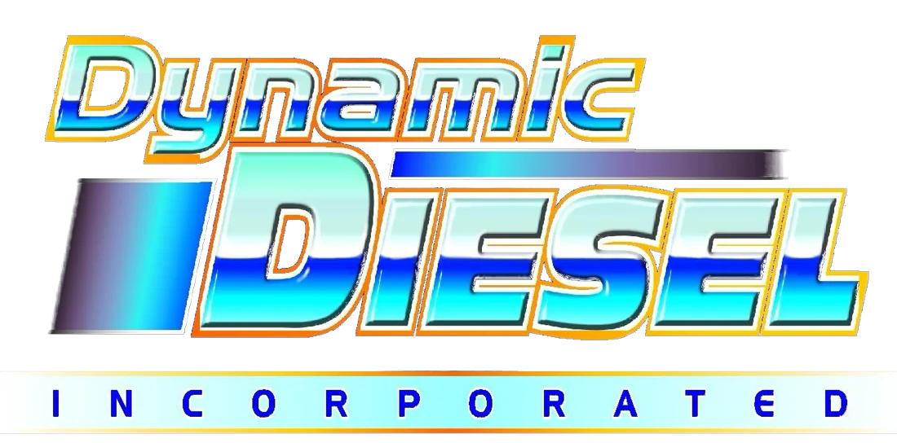

While building the new website, we explored how the Dynamic Diesel logo could look even sharper on phones, social media and the web, while keeping the chrome blue and gold you love. Here are two ideas next to your current logo. Each is shown large, on white, in the website header and as a phone app icon. These are just ideas to consider. There's no pressure to change anything, and the new website works great with your current logo.

Bold, energetic and instantly recognizable. The one challenge is size: the fine shine and outlines are hard to see when the logo is very small, like in a phone's browser tab or a social media profile picture.
Still clearly Dynamic Diesel, just crisper. The motion streaks become three clean stripes in blue, royal blue and gold. Chrome lettering looks its best on dark backgrounds like the website, trucks and signs.
A more modern take. The three slanted bars nod to the motion streaks in your current logo and stay clear at any size, on a truck door, a shirt, paperwork or a phone, on dark or white. It's a bigger change, trading the chrome shine for a clean, flat look.